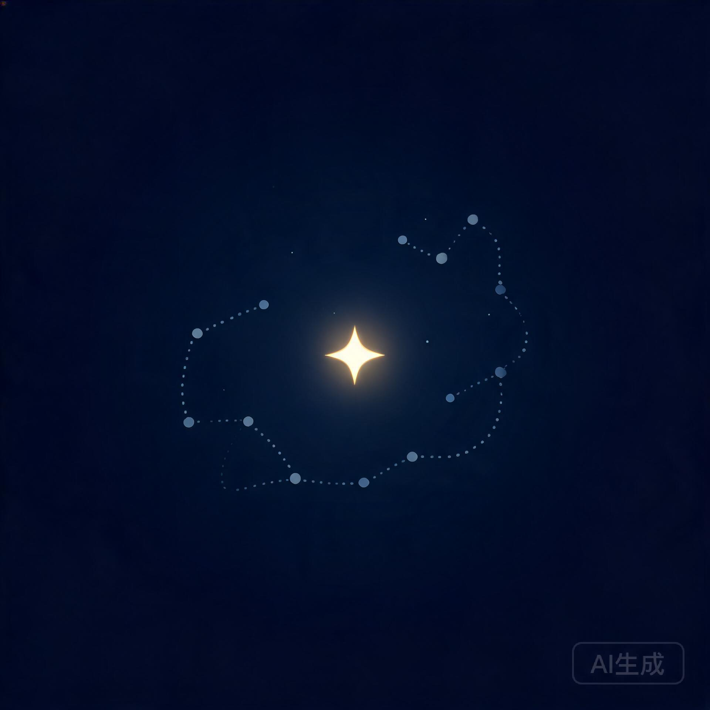

关联星图
3 个聚类 · 12 个原子设计系统基础
公开整理 CogniCard 的色板、字体、圆角与间距 token，确保跨页面一致性。
设计
token
8
2小时前
API 认证流程
私有记录 JWT 签发、刷新与吊销策略，以及飞书授权回退逻辑。
后端
安全
5
昨天
收藏
2026 产品路线图
协作Q1 聚焦知识库与原子网络，Q2 接入更多第三方数据源。
产品
规划
12
3天前
飞书多维表格同步
公开同步 Base 字段、记录与视图变更，处理枚举与附件映射。
集成
飞书
6
1周前
原子卡片组件规范
协作定义标题、摘要、标签、连接数、更新时间、隐私徽标等字段与状态。
组件
前端
9
2周前
收藏
深色模式实现细节
私有基于 CSS 变量与 .dark 类，处理背景、卡片、边框与 glow 的切换。
CSS
主题
4
1月前

知识库还是空的
创建第一个原子，开始构建你的认知名片网络。所有关联与聚类会自动呈现在星图中。